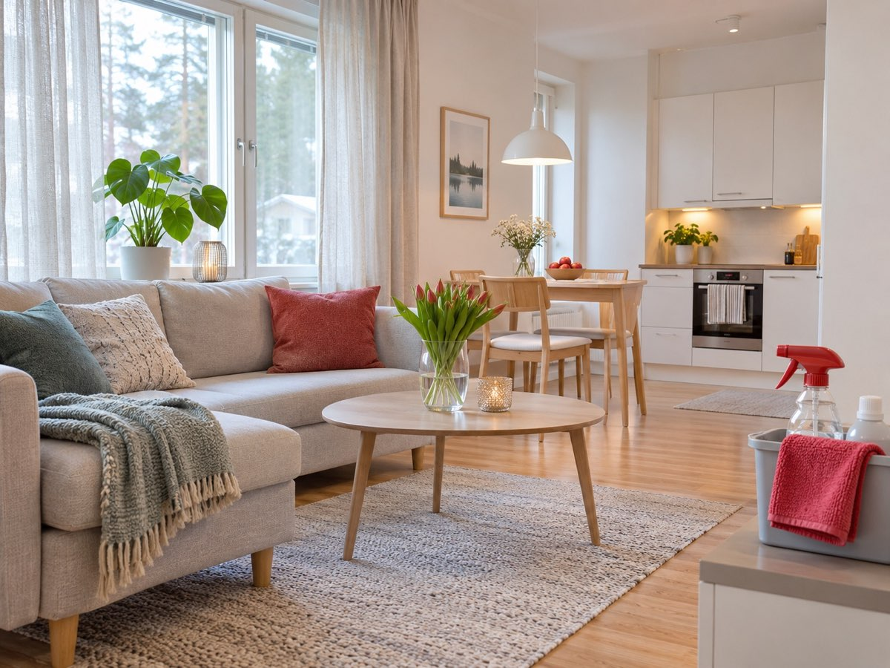

Arjen kotisiivous
Pölyt, tasot, lattiat, keittiö ja saniteettitilat sovitussa laajuudessa. Säännöllinen rytmi pitää kodin helpommin hallittavana.
- Viikoittain, joka toinen viikko tai neljän viikon välein
- Omat toiveet kirjataan työohjeeseen


Huolellinen kotisiivous helpottaa arkea ja pitää kodin viihtyisänä. Sovimme työn laajuuden, käyntirytmin ja kodin omat toiveet aina kanssasi etukäteen.
Valitse palvelu, kodin koko ja käyntirytmi. Näet työn, käyntimaksun ja kotitalousvähennyksen vaikutuksen heti.
Joulusesongin 7.–27.12.2026 kertapalvelut 75 €/h. Muulloin kertapalvelut 70 €/h.
| Avaimen nouto tai palautus | 25 € |
|---|---|
| Siivousvälineiden toimitus tai haku | 25 € |
| Tikkaiden vuokra / käynti | 50 € |
| Paperilaskun laskutuslisä | 5 € |
| Maksumuistutus | 5 € |
| Siivousliinojen pesu | 10 € |
| Imurin lunastus | 260 € |
| Peruspaketin lunastus | 199 € |
| Puhdaspaketin lunastus | 459 € |
Sama yhteyshenkilö auttaa valitsemaan sopivan työn laajuuden. Käynti voi olla säännöllinen, kertaluonteinen tai osa muuttoa.
Pölyt, tasot, lattiat, keittiö ja saniteettitilat sovitussa laajuudessa. Säännöllinen rytmi pitää kodin helpommin hallittavana.
Kun koti tarvitsee tavallista perusteellisemman käsittelyn, sovimme tilat, pinnat ja tavoitetason ennen työn alkua.

Ikkunanpesu, sauna, kodinkoneet, parveke ja muut sovitut lisätyöt voidaan yhdistää samaan käyntiin.

Laskuri antaa lähtökohdan. Vahvistamme vielä tarpeen, laajuuden ja ajankohdan kanssasi ennen ensimmäistä käyntiä.
Lähetä laskurin valinnat ja yhteystietosi.
Käymme läpi kodin, toiveet ja kulun kohteeseen.
Ammattilainen tekee sovitut työt ja kertoo, jos tarve muuttuu.

Palvelemme Tampereella ja lähialueilla. Työn laajuus ja kulku kotiin sovitaan aina etukäteen.
Sovittu ylläpitosiivous kattaa tavallisesti vapaat tasot, pölyt, lattiat, keittiön pinnat sekä wc- ja pesutilat. Kirjaamme kodin omat painotukset työohjeeseen.
Ei tarvitse. Avaimesta, ovikoodista tai muusta turvallisesta sisäänpääsystä voidaan sopia etukäteen.
Kyllä. Voimme rajata käynnin esimerkiksi keittiöön, pesutiloihin tai muuhun sovittuun kokonaisuuteen.
Ei. Se on suuntaa-antava arvio tavallisen kunnon perusteella. Vahvistamme lopullisen työajan ja hinnan ennen tilausta.
Kerro kodin koko, toivottu palvelu ja sopiva ajankohta. Me tarkistamme, että arvio vastaa todellista tarvetta.